|
Cuaderno técnico I: Comunicaciones serie (HW) |
Una manera de conectara dos dipositivos es mediante comunicaciones serie asíncronas. En ellas los bits de datos se transmiten "en serie" (uno de trás de otro) y cada dispositivo realiza tiene su propio reloj. Previamente se ha acordado que ambos dispositivos transmitirán datos a la misma velocidad.
En este cuaderno técnico se muestran los fundamentos de estas comunicaciones, los pines empleados y ejemplos del circuitos para conectar el PC con un microcontrolador, además de mostrar los cables que se pueden emplear.
Los datos serie se encuentran encapsulados en tramas de la forma:
Primero se envía un bit de start, a continuación
los bits de datos (primero el bit de mayor peso) y finalmente
los bits de STOP.
El número de bits de datos y de bits de Stop es uno de los parámetros configurables, así como el criterio de paridad par o impar para la detección de errores. Normalmente, las comunicaciones serie tienen los siguientes parámetros: 1 bit de Start, 8 bits de Datos, 1 bit de Stop y sin paridad.
En esta figura se puede ver un ejemplo de la transmisión del dato binario 10011010. La línea en reposo está a nivel alto:
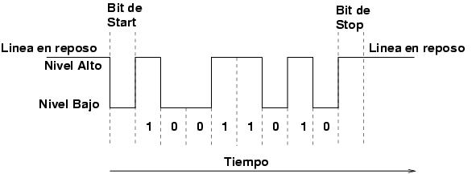
La Norma RS-232 fue definida para conectar un ordenador a un modem. Además de transmitirse los datos de una forma serie asíncrona son necesarias una serie de señales adicionales, que se definen en la norma. Las tensiones empleadas están comprendidas entre +15/-15 voltios.
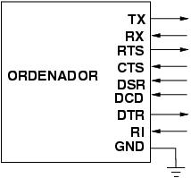
Para conectar el PC a un microcontrolador por el puerto serie se utilizan las señales Tx, Rx y GND. El PC utiliza la norma RS232, por lo que los niveles de tensión de los pines entán comprendidos entre +15 y -15 voltios. Los microcontroladores normalmente trabajan con niveles TTL (0-5v). Es necesario por tanto intercalar un circuito que adapte los niveles:
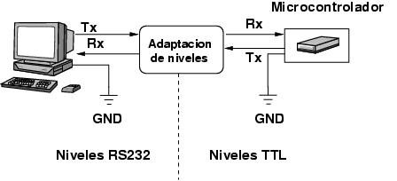
Uno de estos circuitos, que se utiliza mucho, es el MAX232.
En los PCs hay conectores DB9 macho, de 9 pines, por el que se conectan los dispositivos al puerto serie. Los conectores hembra que se enchufan tienen una colocación de pines diferente, de manera que se conectan el pin 1 del macho con el pin 1 del hembra, el pin2 con el 2, etc...
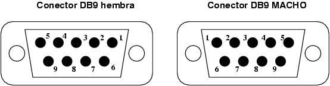
La información asociada a cada uno de los pines es la siguiente:
|
Número de pin |
Señal |
|
1 |
DCD (Data Carrier Detect) |
|
2 |
RX |
|
3 |
TX |
|
4 |
DTR (Data Terminal Ready) |
|
5 |
GND |
|
6 |
DSR (Data Sheet Ready) |
|
7 |
RTS (Request To Send) |
|
8 |
CTS (Clear To Send) |
|
9 |
RI (Ring Indicator) |
Este chip permite adaptar los niveles RS232 y TTL, permitendo conectar un PC con un microcontrolador. Sólo es necesario este chip y 4 condensadores electrolíticos de 22 micro-faradios. El esquema es el siguiente:
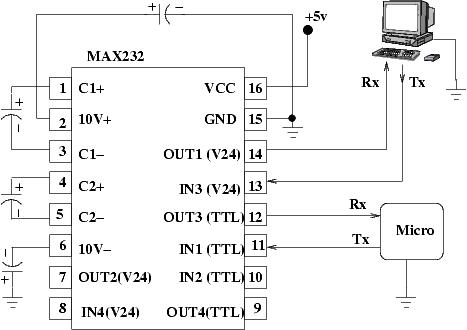
Para realizar la conexión entre el PC y nuestro circuito podemos usar diferentes alternativas. Una manera es utilizar un cable serie macho-hembra no cruzado, y en el circuito un conector hembra db9 para circuito impreso:
|
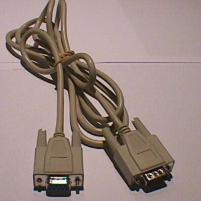 |
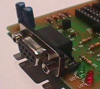 |
Cuando conectamos un micro al PC normalmente sólo usamos los pines TX, RX y GND, sin embargo en este tipo de cables se llevan los 9 pines. Por ello puede resultar útil el utilizar otro tipo de cable, como el utilizado para la tarjeta CT6811.
También se puede fabricar un cable serie utilizando cable plano de bus, conectactando un conector db9 hembra para bus:
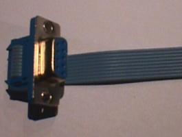
Puesto que en la conexión del PC con un micro sólo se usan las señales TX, RX y GND se puede emplear un cable telefónico, que es sencillo de construir, fácil de conectar y desconectar y las conexiones son muy fiables. Es necesario cable telefónico y un conversor de teléfono a DB9:
|
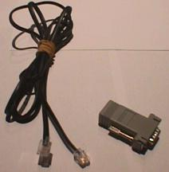 |
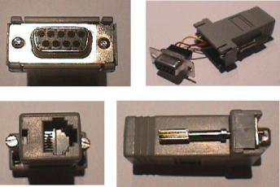 |
El cable de teléfono se tiene tiene que construir o adquirir se esquematiza a continuación:
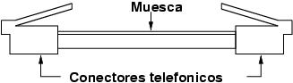
Este cable tiene una muesca que diferencia las dos caras del cable. La correcta posición de los conectores telefónicos es como se ha indicado en la figura, con la muesca del cable hacia arriba.
El conector db9-teléfono que se conecta al PC se compra desmontado. Por un lado se encuentra la carcasa con el conector hembra de teléfono y por otro lado el conector DB9 hembra. Los 4 cables que salen de la carcasa se conectan al DB9 hembra, en los pines que vayamos a utilizar. Como para las conexiones con los micros sólo usaremos los pines RX, TX y GND (Pines 2,3 y 5).
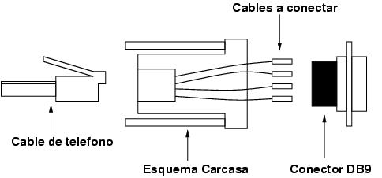
La manera en la que se conecten estos cables es indiferente, sin embargo, para tener compatibilidad con el cable de la CT6811, hay que hacerlo de la siguiente manera:
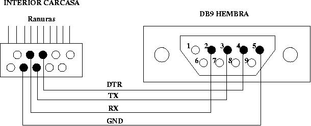
El cable que lleva la señal de DTR es opcional, y en la
CT6811 se usa para hacer reset.
Para la conexión al micro se usa un conector telefónico hembra para ciruito impreso:
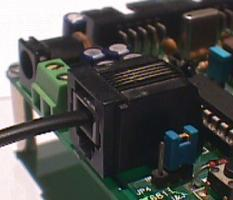
Los pines del conector hembra son los siguientes, vistos desde abajo:
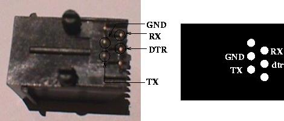
Este documento se distribuye bajo licencia FDL por lo que se permite su copia, modificación y distribución, siempre y cuando se mantenga esta nota.
|
Cuaderno técnico I |
|
ct1.tgz (7KB) |
Figuras del cuaderno, para XFIG |
Tarjeta Skypic: Tarjeta entrenadora para microcontroladores PIC de 28 pines
Tarjeta CT6811: Tarjeta entrenadora para el microcontrolador 68hc11.
5/Sep/2004:
“Suavizado” de los dibujos.
Añadido enlace a la página índice de los cuadernos técnicos
Añadido enlace a la Tarjeta Skypic
26/Jul/2003: Corregida errata. Ahora ya está disponible el fichero ct1.tgz
3/Mar/2003: Publicado en la web